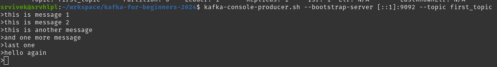

Kafka: Setup and CLI (Command Line Interface)
0. Resources
| Service |
Port |
Info |
| Kafka |
9092 |
Default port |
| Zookeeper |
2181 |
Default port |
1. Kafka: Install Kafka (Conductor) docker setup and local CLI
- About / Introduction
- Setup
Conduktor Kafka in local docker.
- Steps
- Project Setup: Make sure Java SDK 11 or higher is installed and is updated in PATH.
- Step-1: Install
Conducktor in docker.
- Download docker-compose.yml
- Step-2: Start the services
docker compose up -d --wait
- -d: Detached mode: Run containers in the background.
- --wait: Wait for services to be running|healthy. Implies detached mode.
- Step-3: Launch Service.
- Step-4: Kafka Local Binary/executables setup
- Step-5: Starting Zookeeper server
- Command: zookeeper-server-start.sh /path/to/kafka-2.13-3.9.0/config/zookeeper.properties
- Zookeeper requires zookeeper.properties file to start/boot.
- We can use the default zookeeper.properties available as part of kafka-executables.
- Change the Default Data directory dataDir=/tmp/zookeeper in zookeeper.properties, the directory where the snapshot is stored.
- Step-6: Starting Kafka Server (broker)
- Command: kafka-server-start.sh /path/to/kafka-2.13-3.9.0/config/server.properties
- Change the Default logs directory log.dirs=/tmp/kafka-logs in server.properties
- It accets a comma separated list of directories under which to store log files.
- Default Configuration: server.properties
- num.partitions: If required we can update default default partitions from 1 to 'X' (standar is 3) by updating num.partitions=3.
- Port:
- IPv4: listeners=PLAINTEXT://localhost:9092
- IPv6: listeners=PLAINTEXT://[::1]:9092
- log.dirs: log.dirs=/tmp/kafka-logs/broker-0
- Disable auto topic creation:
- Add following property in kafka server.properties
auto.create.topics.enable=false
- Step-7: Lanch 2nd Kafka broker.
- Create new server-broker-1.properties and update below default configuration.
- ID: broker.id=1
- Port:
- IPv4: listeners=PLAINTEXT://localhost:9093
- IPv6: listeners=PLAINTEXT://[::1]:9093
- log.dirs: log.dirs=/tmp/kafka-logs/broker-1
- Command: Launch Kafka server
- Step-8: Stopping servers.
- First stop Kafka server.
- Second stop Zookeeper server.
Note: Trobleshoot connectivity issues on Windows WSL 2 Connecting-to-kafka-running-on-windows-wsl-2/.
2. Kafka: Install Kafka with KRAFT (without Zookeeper)
- About / Introduction
- Start Kafaka server using KRAFT (without Zookeeper)
- Steps
- Project Setup: Some change/step
- Step-1: Generate a new Cluster UUID.
- Command:
kafka-storage.sh random-uuid
- Step-2: Format the storage (Log Directories).
- Command:
kafka-storage.sh format -t Nl0GbGlqReSzOsMirclqoQ -c /path/to/kafka-2.13-3.9.0/config/kraft/server.properties
- Step-3: Start Kafka Server using KRAFT configuration properties.
- Command:
kafka-server-start.sh /path/to/kafka-2.13-3.9.0/config/kraft/server.properties
- Step-4: Stopping kafka server
- Press
Ctrl + C in terminal.
- References:
- About / Introduction
- Connecting to Kafka in docker using Kafka CLI commands.
- Steps
- Project Setup:
- Ensure all Zookeeper (Step-5) and Kafka (Step-6) servers are up and running.
- Refer, Section-1 for setup process.
- Step-1: List topics in kafka server.
- List all topics (just names): kafka-topics.sh --bootstrap-server localhost:19092 --list
- List all topics (with config details): kafka-topics.sh --bootstrap-server localhost:19092 --describe
- Step-2: Create a new topic
- Create topic:
- IPv4: kafka-topics.sh --bootstrap-server localhost:9092 --topic first_topic --create
- IPv6: kafka-topics.sh --bootstrap-server [::1]:9092 --topic first_topic --create
- Note:
- WARNING: Due to limitations in metric names, topics with a period ('.') or underscore ('_') could collide.
- To avoid issues it is best to use either, but not both.
- Troubleshooting:
- Error: [2025-01-06 10:55:26,226] WARN [AdminClient clientId=adminclient-1] Connection to node -1 (localhost/127.0.0.1:9092) could not be established. Node may not be available. (org.apache.kafka.clients.NetworkClient)
- Remediation: Add below lister configuration in /path/to/kafka/config/server.properties
- Step-3: Create topic with # partition config
- Create topic with defined partitions:
- IPv4: kafka-topics.sh --bootstrap-server localhost:9092 --topic second_topic --create --partitions 3
- IPv6: kafka-topics.sh --bootstrap-server [::1]:9092 --topic second_topic --create --partitions 3
- Step-4: Create topic with replication factor.
- Create topic with defined partitions and replicas
- IPv4: kafka-topics.sh --bootstrap-server localhost:9092 --topic third_topic --create --partitions 3 --replication-factor 1
- IPv6: kafka-topics.sh --bootstrap-server [::1]:9092 --topic third_topic --create --partitions 3 --replication-factor 1
- Note:
- Replication factor should not be greater than available brokers
- Step-5: Delete a topic
- IPv4: kafka-topics.sh --bootstrap-server localhost:9092 --topic first_topic --delete
- IPv6: kafka-topics.sh --bootstrap-server [::1]:9092 --topic first_topic --delete
Note: Replace localhost with [::1] if using IPv6.
- About / Introduction
- Steps
- Project Setup: Zookeeper and at least one Kafka server must be running.
- Step-1: Push message to topic using CLI kafka-console-producer.sh
- Command: kafka-console-producer.sh --bootstrap-server [::1]:9092 --topic first_topic
- This command give a prompt to enter mesages, which will be pushed to the topic.
- Every new Prompt/Line is a seperate message.

- Non existing Topic: Shows warnning, if topic doesn't exist Creates one with given name.
- WARN [Producer clientId=console-producer] The metadata response from the cluster reported a recoverable issue with correlation id 5 : {new_topic=LEADER_NOT_AVAILABLE} (org.apache.kafka.clients.NetworkClient)
- Step-2: Push message with producer.properties for acknowledgement.
- Step-3: Push messages with keys
- Command: kafka-console-producer.sh --bootstrap-server [::1]:9092 --topic first_topic --property parse.key=true --property key.separator=:
- Note: It throws error if message is sent without the defined key seperator.
- Producing messages with keys.

Note: Press Ctrl + C to exit the console.